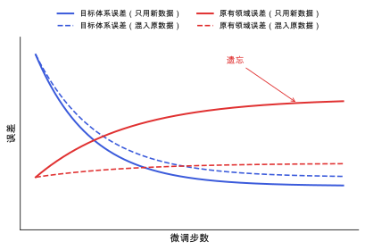

通用机器学习势的微调
在预训练通用势上用少量目标体系数据微调：要多少数据、冻结哪些层、怎样不丢掉原有的弹性与振动性质，以及微调后的势能不能撑住结构搜索里远离平衡的构型。
直观阅读需要
- 机器学习势：训练、内插与外推
- 迁移学习的基本思路
完整推导还需要
只是提示，不需要先读完才能往下看。
直觉直观解释
预训练的通用势（例如 MACE-MP-0，见 MACE 与等变消息传递）见过很多化学体系，但在你的具体体系上不一定够准，而且它的“参考答案”来自别人的 DFT 设置。从头训练一个专用势需要大量 DFT 数据。微调 (fine-tuning) 是折中：从通用势出发，用少量你自己的 DFT 数据继续训练。
好处：模型已经学到了一般的化学规律，少量数据就能把误差降下来。
风险：
- 灾难性遗忘 (catastrophic forgetting)：只用新数据训练，模型可能在新数据上变好，却在原本会的构型上变差。对结构搜索来说，这意味着远离平衡的高能构型可能失去合理的行为。
- 参考不一致：你的 DFT 设置（泛函、色散、POTCAR、截断能）和预训练数据不同，绝对能量会有系统的偏移。

| 曲线 | 是什么 |
|---|---|
| 蓝色实线 | 只用新数据时，目标体系上的误差 |
| 蓝色虚线 | 混入原数据时，目标体系上的误差 |
| 红色实线 | 只用新数据时，原有领域上的误差（遗忘） |
| 红色虚线 | 混入原数据时，原有领域上的误差 |
定义与公式数学与推导
参考能量对齐
MLIP 的总能通常写成
其中 E^{0}_{Z} 是元素 Z 的参考能量（例如孤立原子能量或拟合得到的常数），E_i^{\mathrm{model}} 是模型学的部分。不同 DFT 设置下 E^{0}_{Z} 不同。微调时要么重新拟合 E^{0}_{Z}，要么在训练前把能量标签对齐，否则模型会把一个常数偏移当成需要学的物理。
几种策略
- 全参数微调：所有参数都更新，学习率比预训练小。
- 冻结部分层：只更新靠近输出的层或读出层，保留底层学到的表示。
- 混入原数据（replay）：每个训练批次里加入一部分预训练数据，即上式中 \lambda > 0。
- 多头：共享主体网络，不同数据集各有自己的输出头，避免强迫模型把两套 DFT 设置的答案揉在一起。
数据要覆盖什么
微调数据要覆盖下游任务会访问的构型，而不仅仅是平衡结构：
- 平衡结构附近的小位移和小应变（弹性、声子、压电）；
- 有限温度 MD 的快照（见 分子动力学）；
- 结构搜索中的候选结构，包括高能的（见 晶体结构预测：搜索与排序）。
主动学习可以自动挑出模型没把握的构型补进数据集 [Podryabinkin & Shapeev 2017]。
在本研究线里的样子对应与边界
- 用 PBE-D3 数据微调 MACE：训练标签全部用同一套设置（PBE-D3、同一组 POTCAR、同一截断能和 k 点密度）。如果预训练模型不含色散，决定 D3 是放进标签让模型学，还是在模型外单独加；两种方式不能混用（见 色散校正）。
- 验证清单：
- 测试集用独立来源的构型（不同的 MD 轨迹、不同多晶型），而不是从训练轨迹中随机抽帧；
- 下游指标：多晶型能量排序、晶胞参数、弹性常数、Γ 点声子、结构搜索中低能结构是否与 DFT 精修后一致；
- 远离平衡的检查：压缩、拉伸、随机候选结构上能量是否仍然合理，有没有出现能量“空洞”。
- 何时不必微调：如果通用势在你的验证集上已经足够准（误差明显小于你关心的能量差），就不必微调。
常见坑对应与边界
- 标签设置不统一：不同批次 DFT 用了不同的截断能或 k 点，模型会去拟合噪声。
- 测试集泄漏：同一条轨迹的相邻帧出现在训练和测试两边。
- 只在平衡结构附近验证：结构搜索会访问大量高能构型，微调后可能在那里出现虚假的低能区。
- 学习率太大：几步之内就破坏了预训练的表示，相当于从头训练。
- 色散重复计算：标签里含 D3，又在模型外再加一次 D3。
检验自己对应与边界
参考资料
论文Batatia et al. 2023 (MACE-MP-0)
I. Batatia et al., A foundation model for atomistic materials chemistry, arXiv:2401.00096 (2023)
尚未实际查阅，目前只是拟查阅书目
论文Unke et al. 2021
O. T. Unke et al., Machine Learning Force Fields, Chem. Rev. 121, 10142 (2021)
尚未实际查阅，目前只是拟查阅书目
论文Podryabinkin & Shapeev 2017
尚未实际查阅，目前只是拟查阅书目
论文Wanzenböck et al. 2026
尚未实际查阅，目前只是拟查阅书目
论文Yang et al. 2026
尚未实际查阅，目前只是拟查阅书目
分类机器学习 · 方法 · 研究线：机器学习势、结构预测与能量景观 · 状态：草稿